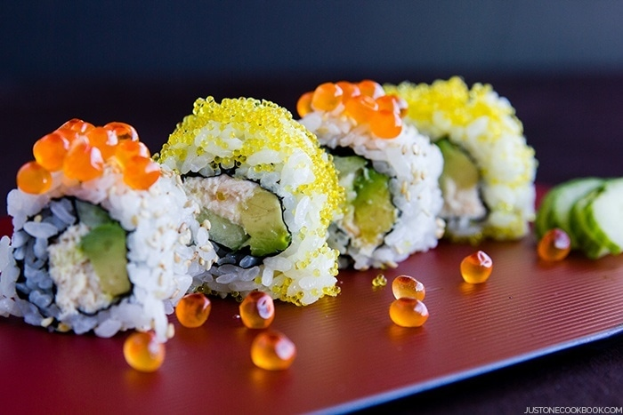

California Roll

Description
A California roll is a fresh take on traditional Japanese rice rolls. Filled with avocado, crab, and cucumber, it's fresh and crunchy and makes a filling meal. You can use real or imitation crab.
Ingredients
- 4 cups water
- 2 cups uncooked white rice
- ½ cup seasoned rice vinegar
- 1 teaspoon white sugar, or to taste
- 1 teaspoon salt, or to taste
- ¼ pound cooked crab meat, drained of excess liquid and shredded
- 1 tablespoon mayonnaise
- 5 sheets nori (dry seaweed)
- 1 avocado, sliced
- ¼ cup red caviar, such as tobiko
- 1 English cucumber, seeded and sliced into strips
- 2 tablespoons drained pickled ginger, for garnish
- 2 tablespoons soy sauce, or to taste
- 1 tablespoon wasabi paste
Steps
- Wrap a sushi rolling mat completely in plastic wrap and set aside.
- Bring water and rice to a boil in a saucepan over high heat. Reduce heat to medium-low, cover, and simmer until rice is tender and liquid has been absorbed, 20 to 25 minutes. Transfer rice to a bowl and cut in vinegar using a rice paddle or wooden spoon. Season with sugar and salt. Allow to cool to room temperature, about 30 minutes.
- Combine crab meat with mayonnaise in a small bowl.
- Place nori sheet on a flat work surface. Spread a thin layer of rice on top of nori. Place nori, rice side down, on the prepared rolling mat. Place 2 to 3 avocado slices on top of the nori in one layer. Top with 2 to 3 tablespoons of the crab mixture. Spoon 1 to 2 teaspoons tobiko lengthwise on one side of the avocado-crab mixture, and 2 cucumber strips on the other side. Using the mat as a guide, carefully roll the California roll into a tight log. Remove the rolling mat. Top roll with more tobiko, cover with plastic wrap, and gently press the tobiko into the top of the roll. Remove the plastic and cut roll into 6 even pieces using a wet knife.
- Repeat with remaining sheets of nori and filling. Serve garnished with pickled ginger, soy sauce, and wasabi paste.
Return to main page